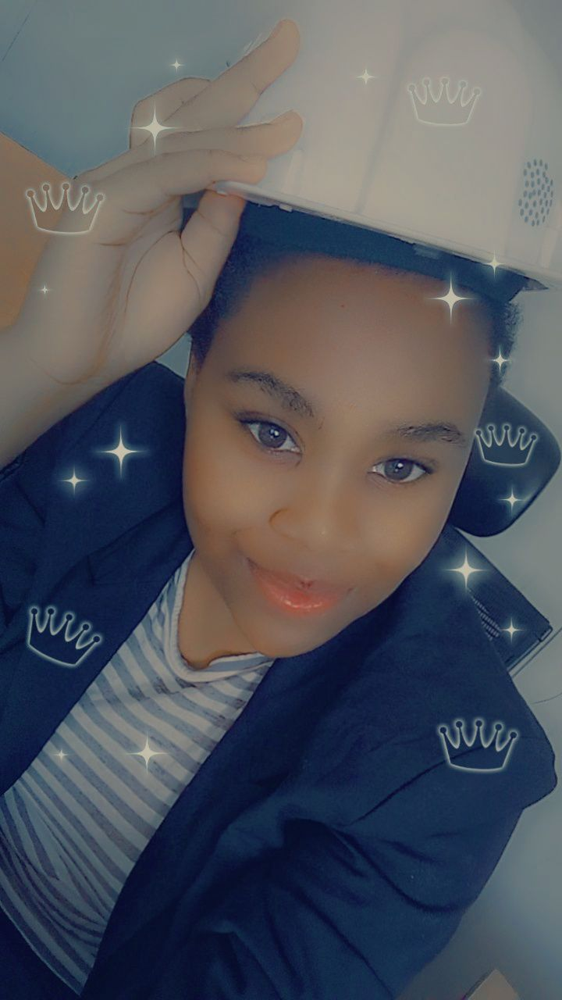

~ About Me ~
Hello there! I'm a Full stack Developer and aspiring to learn more backend development especially given Java and python Developer.
I am Passionate about leveraging technology to create innovative solutions, I am a skilled and learning web/software engineer with a knack for problem-solving and a strong foundation in computer science principles. Outside of my professional endeavors, I enjoy innovation, adventures and problem solving. Whether it is open-source contributions, attending tech meetups, mentoring aspiring developers like me, I am always eager to expand my knowledge and make meaningful contributions to the tech community. As a dedicated soon to be software engineer, I am committed to push the boundaries of technology and making a positive impact through my work.